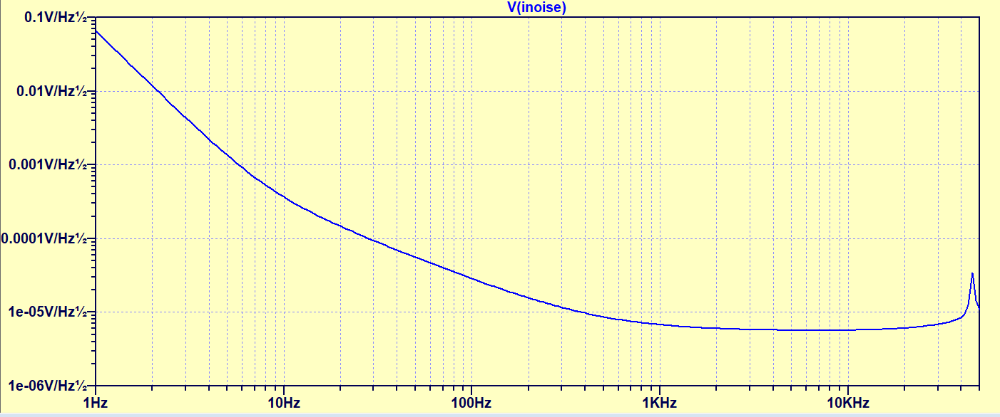

Project Goals & Objectives
The project is awarded by the DOE under the SBIR program for the development of an: Airborne Drone Electromagnetic System for Advanced Data Collection for Geothermal Exploration. ZONGE has been one of only two companies that were awarded grants for geothermal research.
Exploration for geothermal sources is often done with Magnetotellurics (MT). To gather MT data stations collecting 3 magnetic field components and 2 electric field components have to be set up. The station density depends on the exploration goals. Higher station density is beneficial in the inversion process especially to fit the shallow data. By combining fewer traditional MT stations with many magnetic components only, higher frequency only stations we aim to generate a better image of the subsurface with less manual labour.
In such geophysical survey few full MT stations will be placed traditionally and the 3-component magnetic stations will be placed and collected by drones.
The goal of phase 1 is to design and build a prototype of a 3-axis search coil magnetometer and data-logger that can be deployed and retrieved with a drone.
Antenna Objectives
The requirements shown below are based on the proposal to the DOE. They act as a guideline for the first prototype. Our competition uses a Metronix SHFT-02e 3-axis sensor. The drawback of this sensor system is the relatively high lower frequency limit.
Length: 20.3 cm, 8”
Weight: Current coil weighs 240g. There is not much performance to be gained with more weight unless it can be longer than 8”.
High-pass = 25Hz 2 Pole
Low-pass = 50kHz 3 Pole
Maximum signal level = 400nT
Power consumption 7-8mA , increasing up to a few mA if signal level is high
SNR @ 8 Hz = 1
Antenna noise estimate
The initial antenna noise estimate as shown in the proposal to the DOE.
Antenna Sensitivity
For testing purposes the sensitivity will be set to a low value of approximately 10 mV/nT, or another low value that avoids saturation under all circumstances. After initial tests the sensitivity will be adjusted to a level that uses the input range of the ADC better.
This will impact the noise of the coil but it will improve if sensitivity can be increased. The figure below shows the noise estimates for a 10mV output sensitivity.
